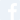

Shift the overall look and feel by adding these wonderful touches to furniture in your home
Ever been in a room and felt like something was missing? Perhaps it felt slightly bare and uninviting. I’ve got some simple tips to help you make any room feel complete.
28 Jun 2020
S H A R E
